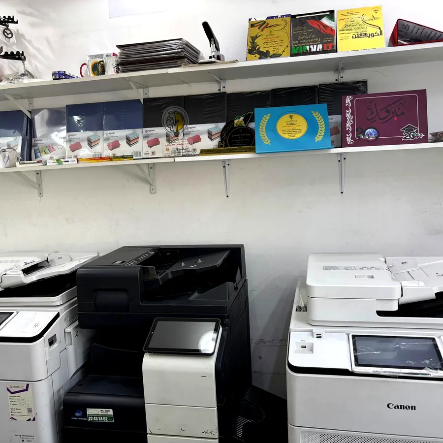

نوفر طباعة ألوان واضحة للمذكرات والمشاريع والأبحاث والعروض، سواء للطلاب في المتوسط والثانوي والجامعة أو لطلاب IG وAmerican Diploma، مع اختيار المقاس ونوع الورق وطريقة التجليد المناسبة.
خدمة طباعة ألوان للطلبة
تحتاج بعض الملفات الدراسية إلى الطباعة بالألوان حتى تبقى الرسومات والخرائط والجداول والصور واضحة. لذلك نوفر خدمة طباعة ألوان للطلبة لمختلف أنواع الملفات، مع إمكانية طباعة الملف كاملًا بالألوان أو تحديد صفحات معينة فقط بالألوان وترك بقية الصفحات بالأبيض والأسود.
يمكن إرسال الملف قبل الحضور عبر واتساب أو البريد الإلكتروني، أو إحضاره على USB داخل المحل. نراجع ترتيب الصفحات واختيار المقاس والوجه الواحد أو الوجهين، ثم نجهز الطلب قبل وصول الطالب لتقليل وقت الانتظار.
ما الملفات التي نطبعها بالألوان؟
طباعة A4 وA3 بالألوان
تتوفر الطباعة بالألوان على مقاس A4 للاستخدام اليومي في المذكرات والأبحاث، وعلى مقاس A3 للخرائط والجداول والملصقات التعليمية والمشاريع التي تحتاج مساحة أكبر. نساعدك على اختيار المقاس المناسب حسب محتوى الملف.
- طباعة ألوان A4.
- طباعة ألوان A3.
- طباعة وجه واحد أو وجهين.
- إمكانية دمج صفحات ملونة مع صفحات أبيض وأسود.
- طباعة الصور والجداول والرسومات والخرائط.
أنواع الورق المتوفرة
يختلف الورق المناسب حسب استخدام الملف. للمذكرات والملخصات غالبًا يكون الورق العادي هو الاختيار العملي، بينما يحتاج الغلاف أو المشروع أو الملصق إلى ورق سميك أو ورق ستيكر.
- ورق عادي للطباعة اليومية.
- ورق سميك للأغلفة والمشاريع والعروض.
- ورق ستيكر للملصقات التعليمية والاستخدامات الخاصة.
- اختيار A4 أو A3 حسب الملف.
الطباعة الملونة وجهين
تتوفر الطباعة الملونة على وجه واحد أو وجهين. الطباعة وجهين مناسبة للملفات الكبيرة والمذكرات التي يرغب الطالب في تقليل حجمها، بينما قد تكون الطباعة على وجه واحد أفضل لبعض المشاريع أو الملفات التي تحتاج مساحة للكتابة والملاحظات.
طباعة PowerPoint وPDF وWord بالألوان
نطبع ملفات PDF وWord وPowerPoint بالألوان، ويمكن تحديد طريقة إخراج العرض مثل طباعة شريحة واحدة أو أكثر في الصفحة عند الحاجة. كما تتوفر خدمات كتابة وتنسيق Word وتحويل الملفات إلى PDF قبل الطباعة.
عند إرسال الملف، يفضل توضيح عدد النسخ والصفحات المطلوبة بالألوان وما إذا كانت الطباعة وجهًا واحدًا أو وجهين، حتى يتم تجهيز الطلب بالطريقة الصحيحة.
طباعة ألوان لطلاب الجامعة
طلاب الجامعة يحتاجون غالبًا إلى طباعة الأبحاث والمشاريع والعروض التقديمية والجداول والصور بالألوان. نوفر طباعة الملفات الجامعية، مع خدمات تنسيق الغلاف والفهرس وترقيم الصفحات وضبط الهوامش والتجليد بعد الطباعة.
طباعة ألوان لطلاب IG وAmerican Diploma
نوفر طباعة الأوراق الدراسية والمراجعات والرسومات والملفات التعليمية لطلاب IG وAmerican Diploma، مع خيارات A4 وA3 والطباعة وجهين والتجليد حسب حجم الملف وكثرة المواد.
التجليد بعد الطباعة
يمكن إنهاء الملف بعد الطباعة بالتجليد المناسب:
- تجليد حلزوني للمذكرات والملفات اليومية.
- تجليد حراري للأبحاث والمشاريع والتقارير.
- تجليد عادي حسب طبيعة الملف.
- غلاف أمامي شفاف وخلفي كرتون أو بلاستيك.
كيف تطلب الطباعة الملونة؟
- أرسل الملف عبر واتساب أو البريد الإلكتروني، أو أحضره على USB.
- حدد الصفحات المطلوبة بالألوان إن لم يكن الملف كاملًا ملونًا.
- حدد المقاس A4 أو A3.
- اختر وجهًا واحدًا أو وجهين.
- حدد نوع الورق والتجليد عند الحاجة.
- اختر الاستلام من المحل أو التوصيل.
تجهيز الطلب قبل الوصول
يمكنك إرسال الملف والتفاصيل مسبقًا، وسنقوم بتجهيز الطباعة والتجليد قبل وصولك. هذه الخدمة مهمة في بداية الدراسة وقبل الاختبارات، خصوصًا للملفات الكبيرة أو عند طلب أكثر من نسخة.
لماذا تختار الخبرة الدولية للطباعة الملونة؟
- طباعة ألوان للطلبة والأفراد والشركات.
- طباعة ملونة وجه واحد أو وجهين.
- مقاسات A4 وA3.
- ورق عادي وسميك وستيكر.
- استقبال الملفات عبر واتساب أو الإيميل أو USB.
- تنسيق Word وتحويل PDF عند الحاجة.
- التجهيز قبل الوصول.
- التوصيل لمعظم مناطق الكويت.
- موقع واضح في حولي: شارع قتيبة، مجمع شيخة، دوار النجاة.
أرسل ملفك للطباعة بالألوان
أرسل الملف وحدد عدد النسخ والمقاس ونوع الورق والصفحات الملونة، وسنراجع التفاصيل ونجهز الطلب قبل وصولك.
أسئلة شائعة عن طباعة الألوان
هل تتوفر طباعة ألوان وجهين؟
نعم، تتوفر طباعة ألوان وجه واحد أو وجهين حسب الملف ونوع الورق.
هل يمكن إرسال الملف عبر واتساب؟
نعم، يمكن إرسال ملفات PDF وWord وPowerPoint عبر واتساب مع تفاصيل الطلب.
هل يمكن إرسال الملف عبر البريد الإلكتروني؟
نعم، نستقبل الملفات عبر البريد الإلكتروني أيضًا، ويتم تأكيد التفاصيل عبر واتساب أو الهاتف.
هل يمكن الطباعة من USB؟
نعم، يمكن إحضار الملف على USB وطباعته داخل المحل.
هل تتوفر طباعة A3 بالألوان؟
نعم، تتوفر طباعة A3 بالألوان إلى جانب A4.
هل يمكن طباعة بعض الصفحات بالألوان فقط؟
نعم، يمكن تحديد الصفحات الملونة وترك بقية الملف بالأبيض والأسود.
هل تطبعون عروض PowerPoint بالألوان؟
نعم، يمكن طباعة عروض PowerPoint بالألوان مع اختيار عدد الشرائح في الصفحة.
هل توجد طباعة على ورق سميك؟
نعم، يتوفر الورق السميك للأغلفة والمشاريع والعروض.
هل توجد طباعة على ورق ستيكر؟
نعم، يتوفر ورق ستيكر لبعض الاستخدامات والملصقات التعليمية.
هل يوجد تجليد بعد الطباعة؟
نعم، نوفر التجليد الحلزوني والحراري والعادي مع أغلفة مناسبة.
هل يمكن تجهيز الطلب قبل وصولي؟
نعم، أرسل الملف والتفاصيل مسبقًا وسنجهز الطلب لتقليل وقت الانتظار.
هل يوجد توصيل؟
نعم، تتوفر خدمة التوصيل لمعظم مناطق الكويت.
هل تخدمون طلاب الجامعة؟
نعم، نوفر طباعة الأبحاث والمشاريع والعروض والتقارير الجامعية بالألوان.
هل تخدمون طلاب IG وAmerican Diploma؟
نعم، نوفر طباعة الأوراق الدراسية والملفات التعليمية والمراجعات الملونة.